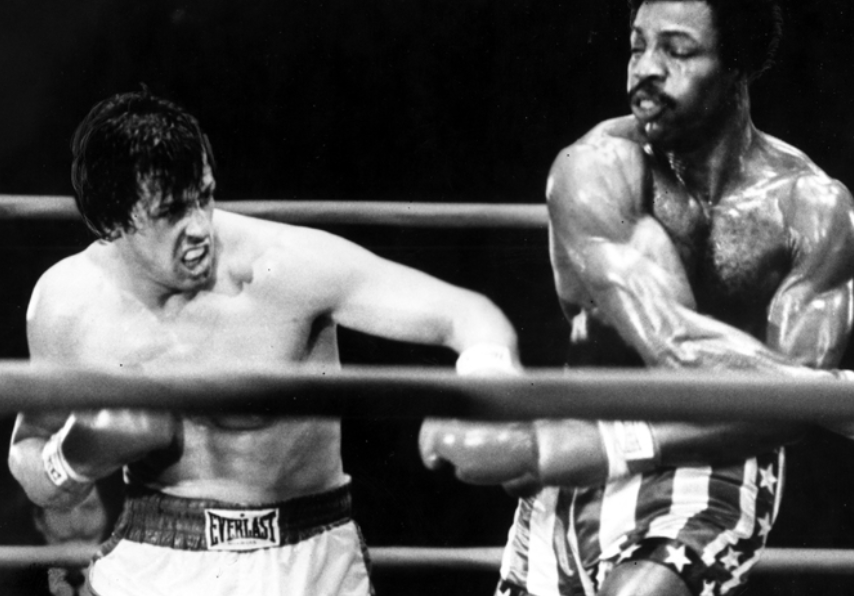
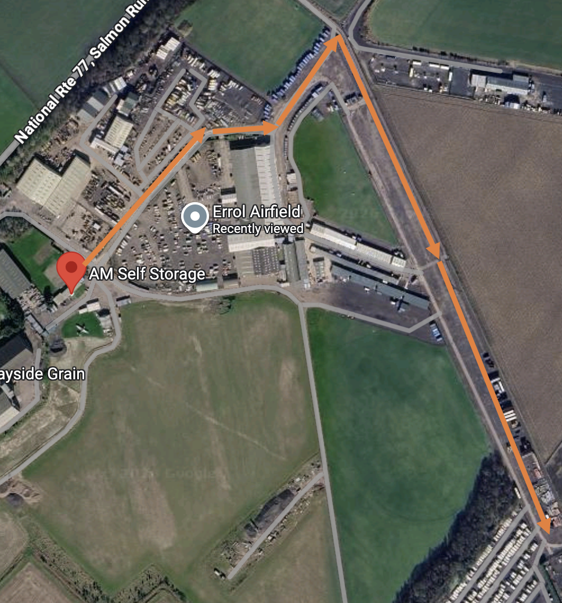

TL;DR
Just watch this maybe if the rest is too long
Useful Information
Hopefully the following sections will help you. Read them / watch them first please rather than googling them in the rain
Outside
To open all the doors: Click the unlock button on the key fob two or three times. I don't count really.
Diesel: Open the passenger door, there is a flap at the bottom. Open that and you will find a place to put your diesel in. There is also AdBlue, which you probably won't need to use. Whilst the motorhome is free for you to use, diesel is not! Please fill it up when you are done.
Mirrors: You can manually fold these flat if you need to. Not sure why you would do this.
Caps: There are black caps on the passenger side for filling up with fresh water and for plugging in the electricity. For the electricity, plug into Rocky first (it is the plug with the flap) before connecting to the hookup. When disconnecting, do the reverse. You need to use a black lever to disconnect the Rocky end.
Flaps: There are flaps on the driver side that open with the smaller key on the fob. They are for toilet waste, access to storage (both sides), and gas bottles.
Lever: There is a black lever underneath the side of the motorhome to empty 'grey' waste. That's non-toilet water in simpler terms, i.e. from the sinks or shower. Pull it out – water comes out. Push it back in – water no longer comes out. Supposedly you can drive over some grate at caravan parks to do it.
Driving: It's wider and taller than a car. Height is 2.95m, width 2.35m, length 7.12m. For bridges don't go under ones that are 3.1m clearance. If you use TomTom GO Truck, it will avoid these for you. You might need to add the dimensions. Use my login or use the 7 day free trial.

Inside
The beds are all made up. You might need a ladder to get up to the top bunk bed or the pulldown double. The ladder will be around somewhere. I think you can find it / them (there may be two, ask your mum)
Control panel - controls all of the interior really. If you like you can download an app iNet X that allows you to do all / most of this from your phone. Once you have connected it via Bluetooth. Could be useful if you want to turn all the lights off from bed
Bunk beds - you can lift the bottom bunk bed up and in theory get stuff out / put stuff in from the storage compartment below. Or use the external flaps
Toilet - under no circumstances can it be used for a number 2. If that is what is required, the campsite has plenty of toilets. If wild camping, go in the woods (as per bears). There is a grey lever on the loo. Right is I think to open the flap to the waste container. Left is to close off the flap to the waste container. The flush is next to the seat. So flush, then turn the grey lever to the left. The flush only works if the water pump is on (see Control panel)
Shower - the tap extends from the sink tap. There is a shower curtain. Remove the wooden slatted floor before using it. The shower won't run long. Personal recommendations:
- don't have a shower OR
- take a very short shower OR
- take a shower in the campsite showers OR
- swim in the lake (wild camping)
Fridge - runs separately from the control panel. Remember to turn it off. There is an On button (it goes blue) then another button that cycles between 12v (battery), connected electricity or gas. Choose Auto for general use. Switch to gas if no electric hookup. Auto is fine for keeping things cool during driving. It won't freeze a chicken though. It will if you are hooked up
WiFi - the wifi router only works when the internal lights (see Control panel) are on. The name is Rocky, the password b1rm1ngham. It is above the passenger seat. It has pretty green lights
TV - there is a remote in a pocket on the wall. You can use a lever behind the TV to 'free' it and pull it out / twist it round. Please be gentle with it. or just leave well alone. The lever has V shaped teeth to secure the TV, for travel. It is like a seesaw with triangular metal teeth to secure. It runs off the wifi and has the normal streaming stuff, all setup. Or you can use the HDMI cable if you can connect an HDMI socket from your phone to it (use Input on the remote and select HDMI2)
Bed from above - this is made up and descends when needed. There are buttons to make it go up or down. Use common sense, ie don't try to move it up and down when someone is in it. Make sure you don't ram it into the seats below. Et cetera
Cab - probably best to connect your phone via CarPlay / Android Auto
Table - there are levers underneath that allow you to move it around. Ensure these are all moved up securely before driving. If it comes loose (can happen, it means you are a bad driver) stop and secure them again. Otherwise it may come loose, and knock you unconscious whilst driving. Not good.
I'll cover some of them in turn later on
Video Instruction Guides
Control Panel
Good video below, it is the same as an Autoroller 707.
Silver Screen
Directions as to how to fit the silver screen to keep Rocky warm and dark at night. Alternatively, hang a blanket over the two drivers seats
Toilet
Use the spray in the bowl after use and before the flush. Close the flap (grey lever to the left) after use. This must be done before removing the cassette outside.
Toilet: Flap Operation
Toilet: Cassette Removal
Swivel Seats
Much easier to watch this than me explaining!
Departure Checklist
- Rooflights & Windows: Close all skylights, roof vents, and side windows tightly and lock them.
- Habitation Door: Ensure the main side door is locked.
- Drop-Down Beds: Ensure the electric drop-down bed is raised to its normal travel position.
- Table: Make sure all three latches underneath are firmly raised up. Otherwise it could come loose in driving. If it does, stop and redo the latches.
- Loose Items: Clear all countertops. Secure all mugs, plates, and laptops in cupboards or dedicated storage.
- Cupboard Latches: Push and click all overhead locker buttons and kitchen drawer catches closed so they don't fly open on roundabouts.
- Fridge Door: Switch the fridge to 12V (Battery) mode so it runs off the engine while driving, and check the door is firmly shut.
- Bathroom: Close the shower screen securely, empty the sink, and ensure the toilet blade valve is tightly shut.
- Toilet waste: Empty the canister at onsite waste point, rinse, and add toilet fluid (green bottle) when you get back from the "walk of shame".
- Gas Bottle: Turn off round valve clockwise on top of the gas cylinders in the external locker. Never travel with open gas. Flip the yellow lever to horizontal.
- Mains Hookup (EHU): Unplug the orange cable from the side of the motorhome and pack it away. Disconnect from the hookup first, then Rocky.
- Control Panel: Turn off at the control panel above the door to ensure no unnecessary appliances pull power.
- Rear Garage: Ensure all bikes, outdoor chairs, and gear are tied down, and lock both garage doors.
- Locker Doors: Check that the toilet cassette door and gas locker are shut and locked key-tight.
- Bike Rack: If fitted, double-check that the straps are tight around the bike wheels and frames.
On your return / pickup
Set your sat nav to AM Self Storage, Errol, Perth (map below). You need to go to either the first building, or the office (dependent on time) and ask for the key to Bay 306. They will give you a key.
Follow the orange lines in the picture (below the map); there are two sets of gates to open. Open them fully and close them after you have gone through. Reverse carefully into bay 306 — use the reversing camera on the screen or, better still, have someone help you.
Pick up your car, drive back and lock each set of gates along the way. Return the key to the office / building where you got it from. They should give you a green laminated card which is needed for when Rocky next escapes.
Pickup is the same, except you give them the laminated card.
AM Self Storage Location
Errol Airfield Map
